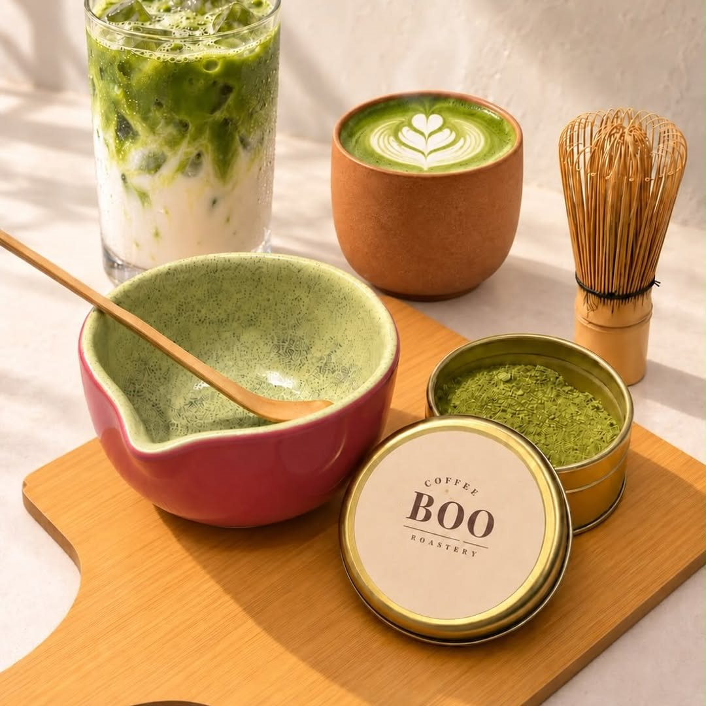
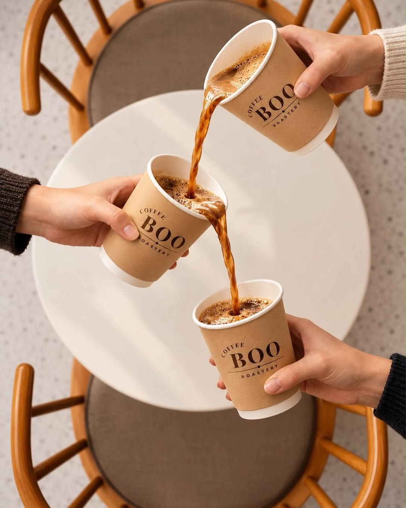
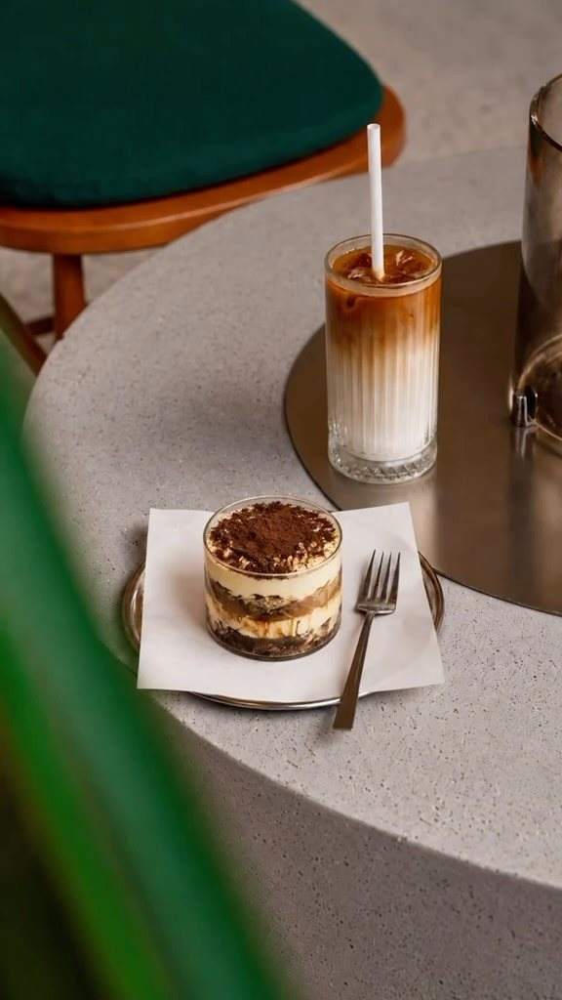

Biraz da matcha.
Kahveden farklı bir mola istediğiniz günlere.
İnmari, Beylikdüzü
Fincan dolsun, sohbet başlasın.
Günün içinde kendinize küçük bir yer açın.

Coffee Boo Roastery
Kahveyle başlayın, matchaya bir şans verin ya da yanına bir tatlı ekleyin. Mola sizin.

Kahveden farklı bir mola istediğiniz günlere.

Bir lokma tatlı, bir yudum kahve. Sohbet biraz daha uzasın.
Yeşil minderler, hasır detaylar ve içeri düşen gün ışığı. Marmara Mahallesi’nde kahvenize eşlik edecek bir masa bulun.
Google yorumları
Google yorumu ★★★★★
“Burayı evim gibi görüyorum, ortam çok keyifli, kahveler, Matcha ve Mocktailler çok güzel”Fulya D. E.Yorumun tamamı
Google yorumu ★★★★★
“Kahvesi efsane.Özellikle filtre kahvesine bayılıyorum.Çalışan personel çok ilgili.”Halil İbrahim Ö.Yorumun tamamı
Google yorumu ★★★★★
“çok tatlı bi yer, badem sütlü matchası lezzetliydi”Bera Zehra K.Yorumun tamamı
Google yorumlarından kısa alıntılar. Puan ve yorum sayısı 2 Kasım 2026 tarihinde kontrol edilmiştir.
Güncel çalışma saatleri, menü ve ziyaretinizle ilgili sorularınız için Instagram’dan bilgi alabilirsiniz.